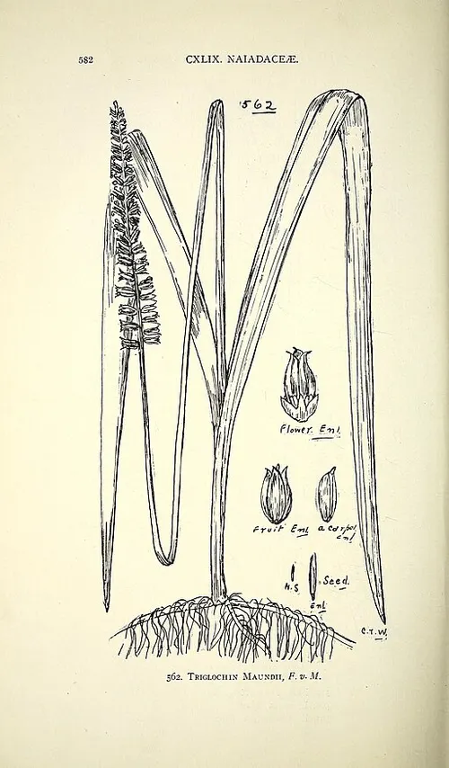

Maundiaceae
(No widely accepted common name)
Maundiaceae is a monotypic plant family containing only a single species, Maundia triglochinoides, an emergent aquatic perennial herb endemic to eastern Australia (Queensland and New South Wales). It belongs to the order Alismatales, an early-diverging lineage of monocots comprising many aquatic families. It is characterized by its linear leaves, dense spike-like inflorescence, and unique apocarpous gynoecium (free carpels).
Overview
The family Maundiaceae consists of just one species, Maundia triglochinoides. This unique plant is an aquatic herbaceous perennial that grows rooted in the mud of freshwater swamps, lagoons, and slow-moving streams along the eastern coast of Australia. It is an emergent plant, meaning its leaves and inflorescences rise above the water surface.
Maundia triglochinoides was previously included in the family Juncaginaceae due to morphological similarities (especially the spike-like inflorescence and general appearance resembling Triglochin). However, molecular phylogenetic studies showed it represents a distinct, isolated lineage within the Alismatales order, warranting its own family status. Its key distinguishing feature is the gynoecium composed of free or nearly free carpels (apocarpy), a relatively rare condition among monocots. The plant is considered vulnerable or threatened in parts of its range due to habitat loss and degradation.
Quick Facts
- Scientific Name: Maundiaceae
- Common Name: None widely used
- Number of Genera: 1 (Maundia)
- Number of Species: 1 (Maundia triglochinoides)
- Distribution: Endemic to eastern Australia (QLD, NSW).
- Habit: Rhizomatous perennial aquatic herbs (emergent).
- Evolutionary Group: Monocots - Alismatales
Key Characteristics
Growth Form and Habit
Rhizomatous, perennial, aquatic herbs, growing emergent in freshwater habitats. Plants are rooted in substrate with leaves and inflorescences extending above water.
Leaves
Leaves arise basally from the rhizome or along a short stem. They are linear, erect, somewhat triangular in cross-section, and internally spongy (containing aerenchyma tissue for buoyancy and gas exchange). Venation is parallel (monocot feature). Leaves have a sheathing base.
Inflorescence
The inflorescence is a dense, unbranched, cylindrical, spike-like structure borne on a long, emergent stalk (peduncle). Flowers are numerous, densely packed along the inflorescence axis, and subtended by small bracts.
Flowers
Flowers are small, inconspicuous, actinomorphic (radially symmetrical), bisexual (possibly sometimes functionally unisexual), and sessile (lacking individual stalks).
- Perianth: Consists of 6 (or interpreted as 2 whorls of 3) small, free, persistent, tepal-like segments. They are typically greenish, yellowish, or brownish and not showy (sepaloid).
- Androecium: 6 stamens, with filaments free from each other and the tepals. Anthers are basifixed (attached at the base) and dehisce via longitudinal slits.
- Gynoecium: Ovary is superior and, distinctively, apocarpous – composed of (2-)3-6(-8) carpels that are free or only slightly fused at the very base, arranged in a whorl. Each carpel contains a single ovule attached near the base (basal placentation). Styles are very short or absent, with stigmas often decurrent (running down the side of the carpel).
Fruits and Seeds
The fruit consists of a cluster of 1-seeded, indehiscent, somewhat spongy or fleshy units derived from the individual free carpels. These fruitlets are typically interpreted as achenes or possibly small follicles. Each fruitlet contains a single seed.
Field Identification
Identifying Maundiaceae (i.e., Maundia triglochinoides) requires recognizing its specific aquatic habit, vegetative features, and unique floral/fruit structure within its restricted range:
Primary Identification Features
- Aquatic Habit: Emergent perennial herb growing in freshwater swamps, lagoons, or slow streams.
- Linear, Spongy Leaves: Basal leaves are long, narrow, somewhat triangular in cross-section, and feel spongy.
- Dense Spike Inflorescence: A cylindrical, unbranched spike of numerous small flowers held well above the water on a long stalk.
- Apocarpous Superior Ovary: Flowers have a superior ovary composed of multiple free or nearly free carpels (requires close inspection, often easier on developing fruits).
- Australian Endemic (Eastern Coast): Found only in specific coastal regions of Queensland and New South Wales.
Secondary Identification Features
- Small, 6-merous Flowers: Flowers inconspicuous, with 6 tepals and 6 stamens.
- Fruit a Cluster of Achenes/Follicles: The mature fruit consists of multiple separate, single-seeded units.
Seasonal Identification Tips
- Flowering/Fruiting Season: Typically occurs in warmer months (spring through summer). The emergent spikes are the most conspicuous feature during this time.
- Vegetative Season: The linear, emergent leaves are present year-round but might be confused with other aquatic monocots if spikes are absent.
Common Confusion Points
Maundiaceae can be confused with other aquatic monocots, especially those in Alismatales:
- Juncaginaceae (Arrowgrass Family, e.g., Triglochin): Very similar in overall appearance with basal linear leaves and spike-like or raceme-like inflorescences. Triglochin also has apocarpous or nearly apocarpous carpels, but differs in details of perianth structure (often 3+3 distinct tepals) and fruit structure (often forming a distinctive structure that splits into segments). Maundia was formerly placed here.
- Typhaceae (Cattail Family, Typha): Also emergent aquatics with linear leaves, but have very different, dense, cylindrical inflorescences separated into distinct upper (male) and lower (female) sections composed of highly reduced, wind-pollinated flowers.
- Cyperaceae (Sedge Family) / Juncaceae (Rush Family): Many aquatic species with linear leaves and often spike-like or head-like inflorescences, but flowers are typically highly reduced, wind-pollinated, enclosed in bracts (glumes/scales), and have a syncarpous (fused) ovary, usually producing an achene or capsule.
- Potamogetonaceae / Ruppiaceae etc.: Other Alismatales families are mostly submerged aquatics with different inflorescence structures and often syncarpous ovaries.
Field Guide Quick Reference
Look For:
- Aquatic emergent herb (E. Australia)
- Linear, spongy basal leaves
- Dense, cylindrical spike inflorescence
- Small, 6-merous flowers (6 tepals, 6 stamens)
- Superior ovary
- Ovary of free carpels (apocarpous)
- Fruit a cluster of achenes/follicles
Key Variations:
- (Monotypic family - essentially no variation above species level)
- Number of carpels can vary slightly (3-8)
Notable Examples
The family contains only one species:

Maundia triglochinoides
(Maundia)
The sole representative of the Maundiaceae family, endemic to freshwater wetlands of coastal eastern Australia. It is an emergent aquatic herb recognized by its linear, spongy leaves, dense cylindrical spike of small, 6-merous flowers, and particularly by its superior ovary composed of multiple free carpels (apocarpy).
Phylogeny and Classification
Maundiaceae belongs to the order Alismatales, which represents an early-diverging lineage within the Monocots. This order is notable for containing a high proportion of aquatic and marine plant families (including all seagrasses). It is distinct from the Commelinid clade (which includes orders like Zingiberales, Poales, Arecales) and the Petrosaviid clade.
Within Alismatales, Maundiaceae represents a small, isolated lineage. Molecular studies place it sister to the rest of the order excluding the Araceae (Arum family). Its closest relatives based on morphology and some molecular data include Juncaginaceae (Arrowgrass family), with which it shares the spike-like inflorescence and tendencies towards apocarpy. Its recognition as a distinct family underscores the phylogenetic diversity present among aquatic monocots.
Position in Plant Phylogeny
- Kingdom: Plantae
- Clade: Angiosperms (Flowering plants)
- Clade: Monocots
- Order: Alismatales
- Family: Maundiaceae
Evolutionary Significance
Maundiaceae, despite being monotypic, is significant for:
- Phylogenetic position: Represents an isolated, early-diverging lineage within the Alismatales, crucial for understanding the evolution of this major monocot order and the evolution of aquatic habits.
- Apocarpy in Monocots: The presence of free carpels (apocarpy) is relatively uncommon in monocots (most are syncarpous) and highlights an ancestral trait retained in this lineage and some relatives (like Juncaginaceae, Alismataceae).
- Endemism and Conservation: Its restricted distribution and specialized habitat make it a focus for conservation biology in Australia.
- Morphological convergence: Its similarity to Triglochin (Juncaginaceae) illustrates potential convergent evolution in vegetative and inflorescence traits among unrelated or distantly related aquatic plants.